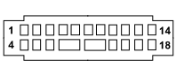

C030 LEFT REAR EARTH (REAR)
- Path
- Electrical equipment > 3 CONNECTORS > C EARTHS > C030 LEFT REAR EARTH > C030 LEFT REAR EARTH (REAR)
- Kind
- connector pinout (pin -> wire colour -> other end)
- Applies to
- all engines; all production periods
- Interactive page
- https://sloeber94.github.io/elrnDB-fPnd/en/#/169003007
Applies to: all engines; all production periods

Wiring | Colour |
|---|---|
NERO (black) |
Pin | Cable | Destination | |||
|---|---|---|---|---|---|
Sec.. | Colour | Node | Connect. | Pin | |
1 | 0,75 | NS (black with pink stripe) | 1 | ||
2 | 0,5 | N (black) | 1 | ||
3 | 1 | NZ (black with violet stripe) | 3 | ||
4 | 0,5 | N (black) | 1 | ||
5 | 0,5 | N (black) | 2 | ||
6 | 0,5 | N (black) | 2 | ||
7 | 1 | N (black) | 3 | ||
8 | 1 | N (black) | 3 | ||
9 | 2,5 | N (black) | 1 | ||
10 | 2 | SN (pink with black stripe) | 1 | ||
12 | 0,35 | NV (black with green stripe) | 2 | ||
13 | 0,35 | NZ (black with violet stripe) | 12 | ||
14 | 1,5 | N (black) | 2 | ||
16 | 0,5 | N (black) | 1 | ||
17 | 1,5 | N (black) | 7 | ||
Topics linked from this page (16)
- 25 REAR
- D085
- F020 LEFT SIDE REPEATER
- F030 LEFT REAR LIGHT CLUSTER
- F031 RIGHT REAR LIGHT CLUSTER (FIXED PART)
- F040 ADDITIONAL REAR LIGHT ('THIRD BRAKE LIGHT')
- G010 FRONT COURTESY LIGHT
- I016B SWITCH ON LEFT FRONT DOOR. (REAR)
- I033 SWITCH ON BOOT OUTER HANDLE
- I050 INERTIA SWITCH
- K062 ALARM VOLUMETRIC SENSORS ASSEMBLY
- M084 PARKING SENSOR CONTROL UNIT
- N016 REAR WINDOW WIPER MOTOR
- N057 BOOT LOCK GEARED MOTOR
- P055A HEATED REARSCREEN (REAR)
- P092 SUBWOOFER